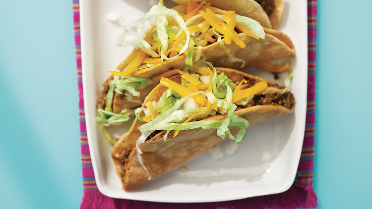

Cripsy Tacos

Description
If you think of iconic American tacos, the crispy taco what most often comes to mind. This style, which also goes by the name of hard-shell tacos or crunchy tacos, is defined by the corn tortilla fried into a U shape, then stuffed with meat, lettuce, tomatoes, and cheese. While fast-food renditions and prefabricated tortilla shells have given it a bad reputation, when prepared with love and with care, the classic crispy taco is a Tex-Mex joy.
Ingredients
- Taco shells
- 2lb ground beef
- Shredded Mexican cheese
- Refried beans (1 can)
- Shredded lettuce
- 1 Tomato diced
- Taco seasoning
Steps
- Add to the skillet the ground beef, chili powder, cumin, oregano, salt, pepper, cayenne, tomatoes, and cilantro. Stir until everything is well combined then turn the heat down to low and simmer while stirring occasionally until the meat is browned, about 15 minutes. Stir in the lime juice and taste and adjust seasonings. Remove from the heat.
- To make the tacos, line a baking sheet with paper towels and heat 2 inches of oil to 350°F in a heavy skillet. Take a tortilla and fold it in half into a “U” shape, holding it with tongs in the center. Using the tongs, dip one half of the tortilla, lengthwise, into the hot oil, leaving the other half out of the oil. Fry the first side until crisp, about 10 seconds, and then repeat for the other side, holding the already-cooked side out of the oil. Drain the taco shell on a paper-towel-lined sheet and repeat until all the shells are fried.
- To assemble the tacos, take each shell and fill with ground beef, lettuce, tomatoes, and cheddar cheese. Serve with salsa on the side, if desired.